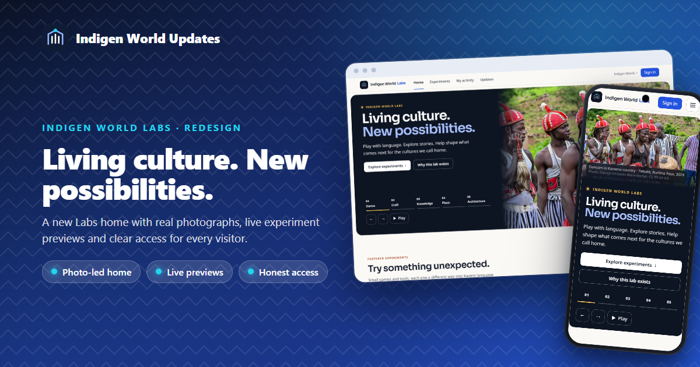
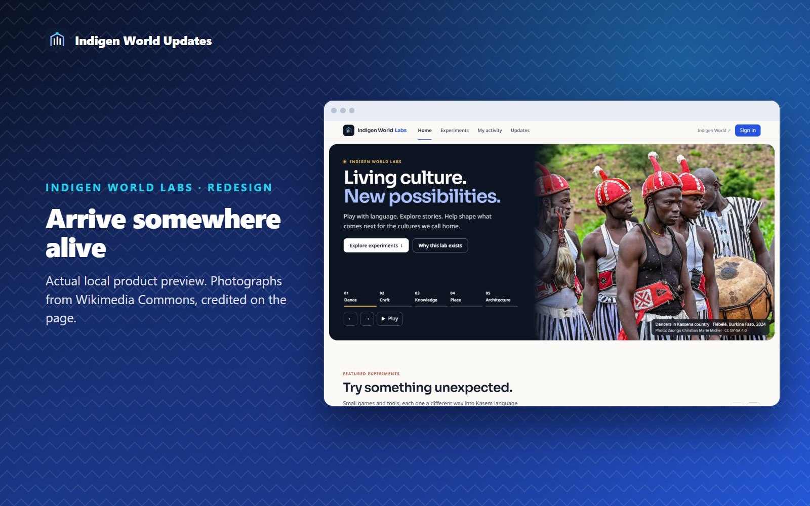
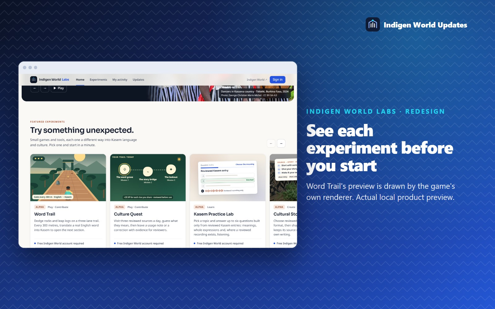
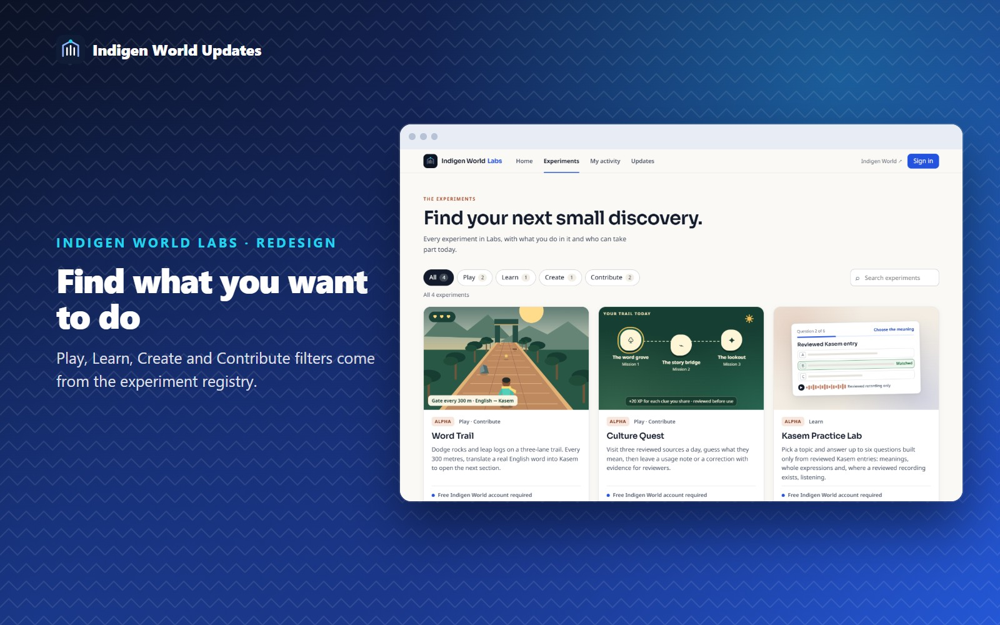
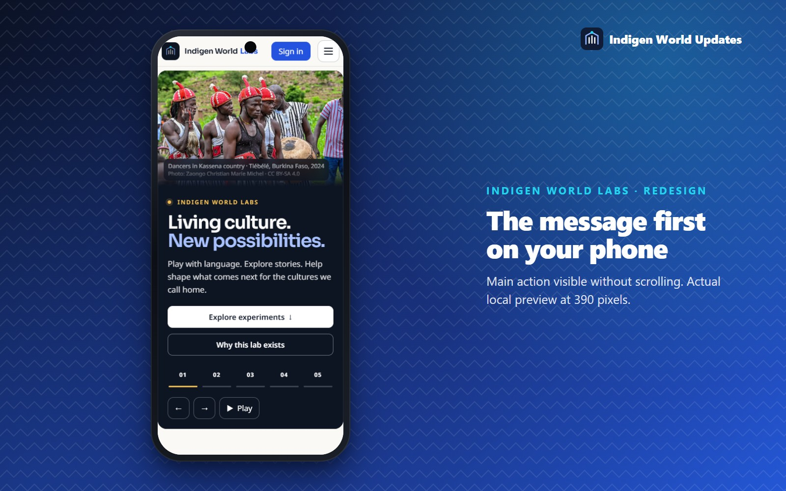

Release status: The redesigned Indigen World Labs is complete in our code and has been checked locally. It is not live yet; the current Labs site stays in place until the release is approved and deployed. The images show the actual new pages running locally.

Labs is where we try new ways to learn, create, play and contribute around Kasem language and Kassena culture. It should feel like something interesting is happening there. The old Labs page felt more like a directory, so we rebuilt it.
The Labs home now opens with real photographs from Kassena communities and contemporary knowledge work: dancers in Tiébélé, painted compound walls, a Wikipedia edit-a-thon at UDS Navrongo, a Wiki Loves Earth photowalk at the Paga crocodile pond and the Navrongo basilica. Every photo has a caption saying what it shows and who took it.
The message stays still while the photos change: Living culture. New possibilities. It sits on a solid dark panel, so it stays readable whatever photo is showing. The slideshow changes about every eight seconds with a gentle fade. You can pause it, step through it with the arrows, pick a photo by name, or swipe on a phone. It pauses while you hover over it or tab through it with a keyboard. If your device asks for reduced motion, the slideshow does not play by itself.

Under the slideshow, a new Try something unexpected row shows each experiment with a preview of what it really is:
Each card says in one sentence what you do, shows its real stage (all four are currently Alpha) and has one clear button.

Before, some signed-in visitors saw a Sign out button at the top while every card still said “Sign in to participate”. Now the account button, the cards and the experiment pages all take their status from the same place:
The Experiments page now lets you filter by Play, Learn, Create and Contribute, and you can search. Filtered views have their own web address, so you can share one. Every experiment is still listed in a normal grid, not only in the scrolling row.

A new section explains what happens to your work, and keeps it accurate. Practice uses only reviewed dictionary entries and expressions. Word Trail translations and Culture Quest notes go into review queues and stay proposals until reviewers check them. Game points and XP are never payments. Story drafts stay private to your account.
If you are signed in, a Continue exploring section shows your recent practice sessions, story drafts and feedback, taken from your own activity. Lab notes from the team appear when they are published. A Help shape the lab band links straight to each experiment’s feedback form.
On a phone, the headline and the Explore experiments button show without scrolling. The menu opens as a simple list that closes with the Escape key. Buttons are large enough to tap easily, and no page scrolls sideways.

The experiments work exactly as before. Word Trail, Culture Quest, Kasem Practice Lab and Cultural Story Builder keep their addresses, sign-in rules, review queues, feedback forms, admin controls and usage counts. This update changes how Labs looks and how you find your way around it.
About the photographs: these are openly licensed photographs from Wikimedia Commons, credited on every page under Photo credits and licences. They are not Indigen World community submissions, and we describe each scene only as the photographer did. We would love to replace them with photos approved by our own community over time.
We will share an update when the new Labs is live at indigenworld.com/labs.